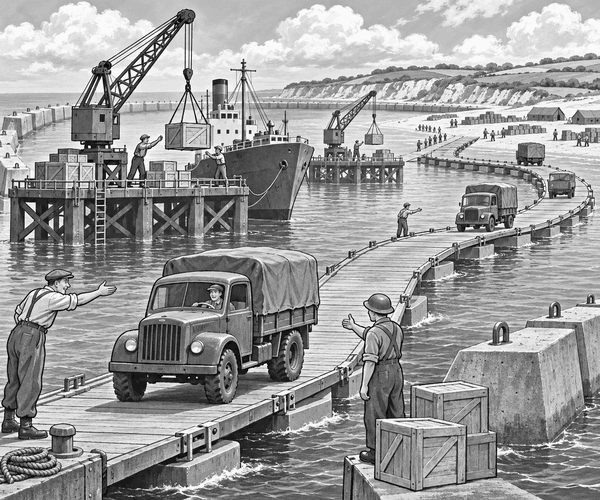

Tom stood beside the sea.
Scout sniffed a huge block of old concrete.
It looked like part of a wall.
But this wall had once crossed the sea.
Its story began in 1944, during World War Two.
Allied troops had landed on the beaches of Normandy in France.
They needed food, fuel, tools and vehicles.
Ships carried the supplies across the English Channel.
But the large ports were not ready to use.
How could the ships unload?
Engineers had a giant idea.
They would build new harbours in Britain.
Then they would take the harbours to France.
The harbours were built in many pieces.
Some pieces were enormous concrete boxes.
They were called caissons.
Tugboats pulled them slowly across the Channel.
Chug. Chug. Chug.
Other pieces made floating roads.
They rose and fell with the waves.
Workers joined the pieces beside the beaches.
Old ships and concrete blocks formed a breakwater.
A breakwater makes the water behind it calmer.
Long floating roads reached from deep water to the shore.
Now cargo ships could stop offshore.
Crates rolled onto the floating roads.
Trucks carried them onto dry land.
Tanks, bulldozers and ambulances also came ashore.
Two great temporary harbours were made.
They were given the code name Mulberry.
Mulberry A served the American forces.
Mulberry B served British and Canadian forces at Arromanches.
Then a fierce storm struck.
Huge waves badly damaged Mulberry A.
Useful parts were saved and used to help repair Mulberry B.
Mulberry B kept working for about ten months.
It helped unload the supplies needed to move across Europe.
Harbour fact: The two Mulberry harbours were built in sections. Tugboats towed the sections across the English Channel.
Sea fact: Floating roads could bend with the waves while lorries travelled along them.
Tom looked again at the concrete block.
It was not just an old wall.
It was one piece of a harbour made like a giant kit.
A kit so big that it crossed the sea.